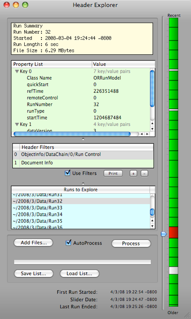

Header Explorer


The Header Explorer is used to examine the headers or parts of headers of a group of runs. One can load in a number of ORCA run files and scan for particular header information using filter strings.

Selected run’s summary
Selected run’s header -- may be a subset of the header if a filter is being used. Note that you can have multiple filters.
A header path name used for filtering. Multiple filters can be defined.
List a run files for exploring. Note that you can drag files and folders into this list.
Enable/Disable the filter process
If enabled, adding or removing files will cause all the files to be re-processed
Manually start processing the file list
Save/Restore a custom list of files

Time span of the processed runs and the date that the date selection slider represents
Date selection slider
Each segment represents a run. The segment length is proportional to the run length.
Helpful Hints
You can drag files or folders from the Finder into the file list area.
Use the up/down arrow keys to step thru the runs.
Selected files can be removed by hitting the Delete key.
Double-clicking a selected run will open the Data Explorer (but only if the Data Explorer is in the configuration).
You can drag/drop from the header area into the filter list to define new filters -- if the Use Filter option is not selected.
You can cut/paste from the header area onto an existing filter---- if the Use Filter option is not selected.
Selection Filters
By using a selection filter, you can restrict the header view to display only portions of the entire XML run header of the selected file.
At the left is a typical run header that has been expanded down to the gains for a particular shaper card. Note that the Use Filter option is not selected.
Here, note that the Use Filter option is selected and that the filter string is constructed like a file path by using forward slashes. In this case, the entire set of gains for card 1 is displayed. Note that you can drag from the header view into the filter view to add or modify a filter, but only if the Use Filter option is not selected.
By adding a channel value to the filter string, you can display just one gain value.
Currently selected run. Double-Click either place to open the Data Explorer if it is in the configuration
Add/Remove filters


Print the selected filter(s) to the status log